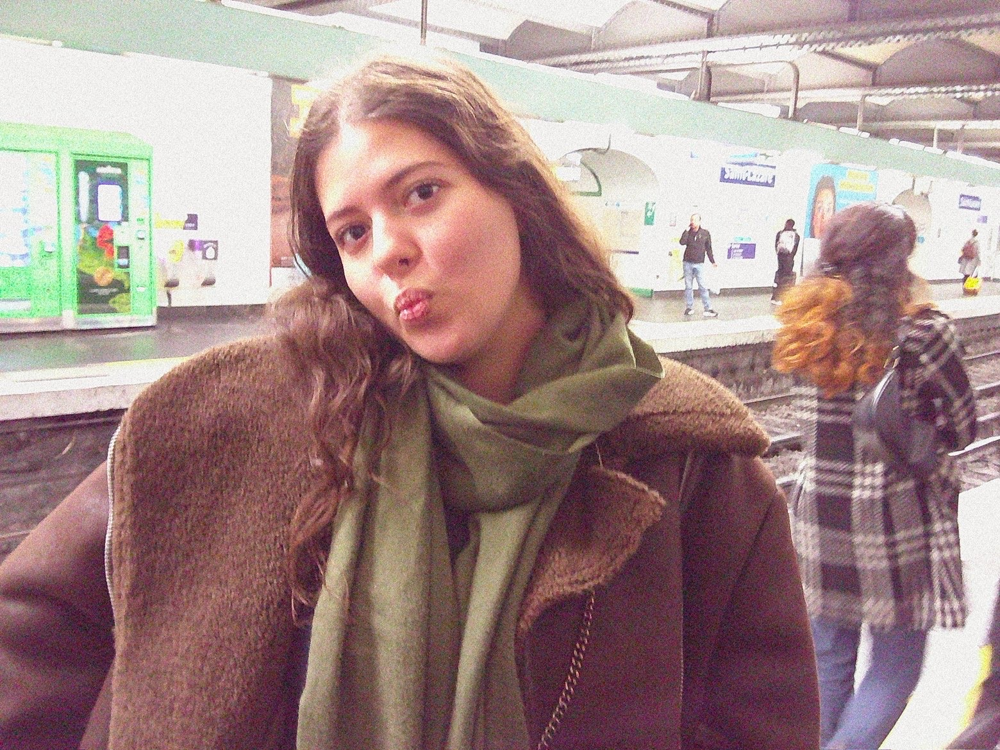
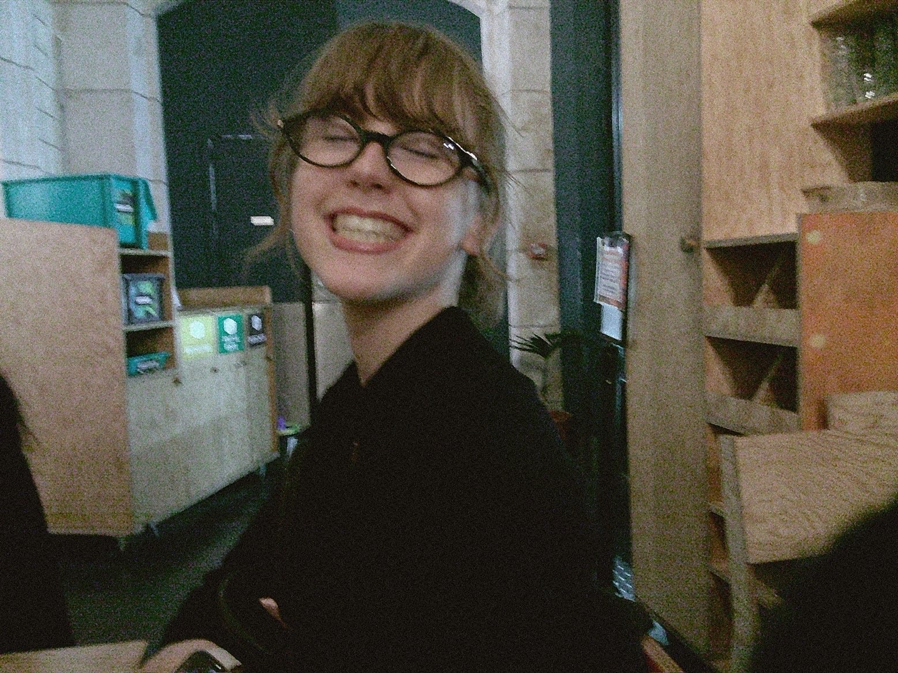

🏎️ À PROPOS DE NOUS
Découvrez les deux passionnées derrière F1 Fan Zone !
❤️ DEUX ÉTUDIANTES, UNE MÊME PASSION


Bienvenue sur F1 Fan Zone !
Nous sommes Nour et Salomé, deux étudiantes en première année de cycle ingénieur à l'EFREI Paris, réunies autour d'une passion commune : la Formule 1 !
Passionnées par l'univers du sport automobile, nous aimons autant l'adrénaline des courses que les stratégies des écuries, les performances des pilotes et les rebondissements de chaque Grand Prix.
🏁 POURQUOI F1 FAN ZONE ?
Dans le cadre de notre projet de programmation web, nous avons choisi de créer un site qui nous ressemble et qui reflète notre enthousiasme pour la Formule 1.
Notre objectif ? Réunir plusieurs aspects de cet univers au même endroit : actualités, classements, écuries, événements, merchandising et même un mini-jeu pour tester ses connaissances !
Nous avons imaginé F1 Fan Zone comme un espace dynamique, accessible et interactif, aussi bien pour les passionnés de longue date que pour ceux qui découvrent ce sport.
Plus qu'un simple projet universitaire, ce site est l'occasion de combiner notre passion pour la F1 avec nos premières compétences en développement web.
🏁 QUE LA COURSE COMMENCE !
Deux passionnées, un projet, une seule ligne d'arrivée !
DÉCOUVRIR F1 FAN ZONE →